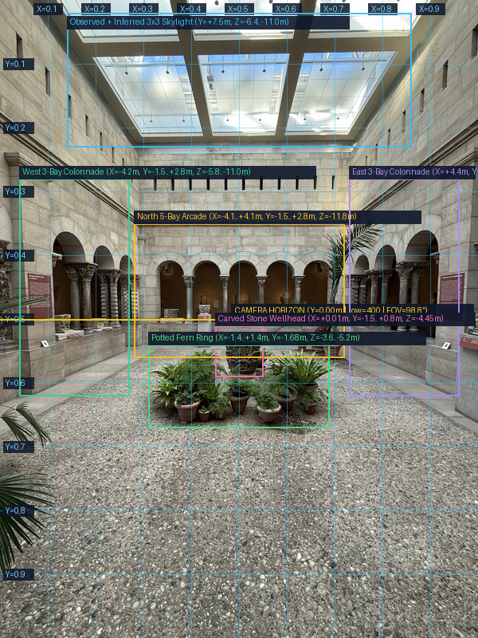
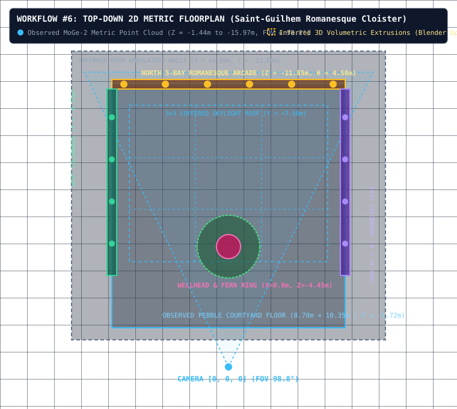
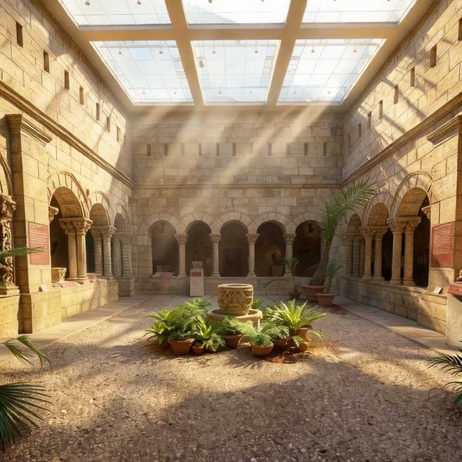

Interactive 3D World Viewport
Stage: Awaiting ReconstructionCam: [0.00, 0.00, 0.00] | FOV: 98.8°
● Observed: MoGe-2 Point Cloud | ● Inferred: Argon Blender 4.1 GLB
Round: — | Critic Score: —
⏳ TIME TRAVEL SCRUBBER:
2026 (Present Viewpoint)
Timeline Branch:
ART DIRECTOR CONTROLS (Workflow #4):
Suggested Interventions:
Workflow #3: 4-View Adversarial Critic Diagnostic Screenshots (Actual Captures)
Independent Critic inspects all 4 views (with UI hidden) to identify ≥3 genuine deficiencies before Round 2 code rewrite
1. Original Camera [0,0,0]
Awaiting Round 1
2. 3/4 Overview
Awaiting Round 1
3. Low Ground Angle
Awaiting Round 1
4. 3D Wireframe View
Awaiting Round 1
Workflow #5 & #6: Spatial Grounding (X/Y Grid, 2D Metric Floorplan, MoGe-2 Depth & Nano Banana Target)
Distinguishes Observed MoGe-2 Point Cloud from Inferred 3D Volumetric Extrusions
A. Annotated X/Y Metric Grid

B. Top-Down 2D Floorplan (.svg)

C. MoGe-2 Metric Depth
Run Step 1
D. Nano Banana Target Render

Closed-Loop Quantitative Verification (Round 1 → Round 2 Improvement)
Measured from actual Blender 4.1 geometry telemetry, 4-view critic scores & pixel registration
1. Adversarial Critic Score
—
Round 1 vs Round 2 (/10)
2. 3D Mesh Complexity (bpy)
—
Objects | Verts | Triangles
3. Ground-Contact Precision
—
Floor Elevation Error (m)
4. Same-Cam Registration
—
SSIM / PSNR at Pose [0,0,0]
5. Code Rewrite Delta
—
Lines Added / Modified in R2
6. Stage Latency Breakdown
—
MoGe-2 | Argon | Blender 4.1
Run Steps 1–4 to execute Round 1 scene-specific 3D authoring, capture the 4 diagnostic screenshots, run the independent Adversarial Critic, and rewrite the Blender Python code in Round 2.